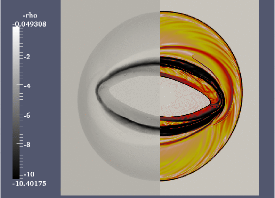

This document describes a few relatively simple example simulations which can be done based on some readily available src/usr/amrvacusr.t.* files, along with their par/* files, which are part of the subversion MPI-AMRVAC release. See AMRVAC_Man/USAGE for a more complete description on how to use the code.
The commands on this page are still for the old svn version. See the $AMRVAC_DIR/tests folder for a plethora of tests with the git version.
cd src setamrvac -d=22 -phi=0 -z=0 -g=16,16 -p=rho -u=testrho -s make clean amrvac cd .. ln -s par/testrho/testrho_vac22 amrvac.par mpirun -np 1 amrvacThis test uses the src/usr/amrvacusr.t.testrho amrvacusr-module, which contains several tests, distinguished by iprob. In the above setting, it will use iprob=3 as specified in the &amrlist and do a 2D advection of the VAC-logo on a double periodic domain, on the unit square. After converting the 21 data files created to the VTK format suited for paraview visualization, you will be able to make the following movie in a few simple steps:
Its default settings is to perform one advection over the full diagonal, use 3 AMR levels, and have a base level 1 resolution of 24 by 24 (split in four 12 by 12 grid blocks). A somewhat more advanced paraview user can make the following movie, combining the 2D view with a cut along the middle of the box:

cd src setamrvac -d=33 -phi=0 -z=0 -g=16,16,16 -p=rho -u=testrho -s make clean amrvac cd .. ln -s par/testrho/testrho_ball33 amrvac.par mpirun -np 1 amrvacUse now the data conversion and paraview to make the following movie:

We note that the src/usr/amrvacusr.t.testrho actually codes up 6 different tests, some of them realizable in any dimensionality. You are encouraged to make the corresponding par-files for these tests, and use these tests to investigate different discretization methods, different settings for the AMR strategy, etc, on problems for which you know the exact solution.
cd src setamrvac -d=11 -phi=0 -z=0 -g=16 -p=hdadiab -u=testhdadiab -s make clean amrvac cd .. ln -s par/testhdadiab/testleveque amrvac.par mpirun -np 1 amrvacThis will run problem iprob=19 out of the 19 precoded tests, and after converting and visualizing (with Idl this time), you should be able to recover the behaviour below (note the vertical scale on the axis, clipping the delta-wave peaks away).
cd src setamrvac -d=22 -phi=0 -z=0 -g=16,16 -p=hdadiab -u=testhdadiab -s make clean amrvac cd .. ln -s par/testhdadiab/khadiabA amrvac.par mpirun -np 1 amrvacIt sets up a sheared horizontal velocity field (a tanh profile), augmented with a small sinusoidal vertical displacement centered on the velocity shear region. This situation is Kelvin-Helmholtz unstable, and a vortical flow pattern develops. After converting and using paraview, you can create frames as shown below (or make a movie).


src/usr/amrvacusr.t.wchd22 src/usr/amrvacusr.t.bowhd22 src/usr/amrvacusr.t.testhdrt src/usr/amrvacusr.t.rimhd22 src/usr/amrvacusr.t.poletest src/usr/amrvacusr.t.liskaand the corresponding par-files
par/testhd/wchd22 par/testhd/bowhd22 par/testhd/testhdrt22 and par/testhd/testhdrt33 par/testhd/rimhd22 par/testhd/poletest_lohner par/testhd/liska_tvdlfSome are meant to be run in 2D only, some can be set up in 2D and 3D, sometimes requiring suitable adaptations in the par-files provided. The first one listed is the Woodward and Collela shock reflection problem, on a 2D cartesian grid. It is a nice illustration on how to code up some non-trivial special boundary conditions (spatio-temporally varying). The second is a supersonic flow hitting a cylinder, and demonstrates the use of a cylindrical grid. The third can be run in 2D and 3D, and uses an external constant gravitational field to simulate the development of a Rayleigh-Taylor instability when a heavy density gas rests on top of a light one. The fourth test concentrates on the Richtmyer-Meshkov variant of the Rayleigh-Taylor instability, by letting a shock impinge on an inclined density discontinuity. The fifth test does a standard 1D Riemann problem (the Sod problem) on a 2D polar grid, to show how the boundary conditions need to be set for a symmetry axis. The final test could be run in 2D and 3D, and studies the multiple reflection of shocks in a box, where one can vary the schemes at will, to see how the small-scale structure (combinations of Richtmeyer-Meshkov and Kelvin-Helmholtz behaviour) are influenced by resolution, discretization etc. It is also useful to see which schemes maintain the symmetry about the diagonal.
Impressions for some of these tests are shown below:


This Rayleigh Taylor test (july 2011) can be repeated with 7 refinement levels, it then takes
11375 seconds (on a 4 CPU macBook pro, a bit over 3 hours, all IO included). The movie and figure for that run is


The latter `liska' test is a nice one to test symmetry-preserving properties for schemes, and to compare effects of resolution (by raising the number of AMR levels). On my MacBook Pro (june 2011), a quadcore CPU with 8GB memory, I can run a 6 level version (base resolution 24 x 24) up to time t=2.5 in less than 12000 seconds (slightly over 3 hours). The movie for that run is shown here.
One of the tests is the Orszag-Tang test, in the compressible regime, for which an animation is shown below.

The Orsaz-Tang test is again nice to test symmetry-preserving properties for schemes, and to compare effects of resolution (by raising the number of AMR levels). On my MacBook Pro (june 2011), a quadcore CPU with 8GB memory, I can run a 6 level version (base resolution 48 x 48) up to time t=6.28 in less than 24000 seconds (slightly under 7 hours). The movie for that run is shown here.
Another representative MHD problem is the GEM challenge, realizing reconnection in resistive MHD. The problem is described e.g. in the book `Advanced Magnetohydrodynamics. With applications to laboratory and astrophysical plasmas.', J.P. (Hans) Goedbloed, Rony Keppens, & Stefaan Poedts, 2010, Cambridge University Press, 634 pages, ISBN 9780521705240 (Paperback). We show here the case with resistivity parameter set to 0.001.

Shock reflection on polar grid, relativistic hydro
Two component jet evolution on cylindrical grid, relativistic hydro
2D Richtmyer Meshkov, relativistic hydro
2D Rotor, relativistic MHD

2D Friedrichs diagram, relativistic MHD
2D Orszag Tang, relativistic MHD
A test not found in the above paper, but relevant for much of the work we do on relativistic jet modeling, is the jet model from the original Marti et al. (ApJ 479, 151, 1997) work. The case there indicated as C2, has been modeled and visualized in this movie.